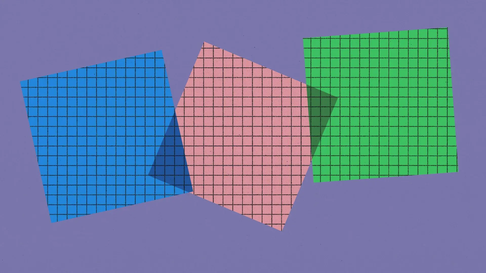
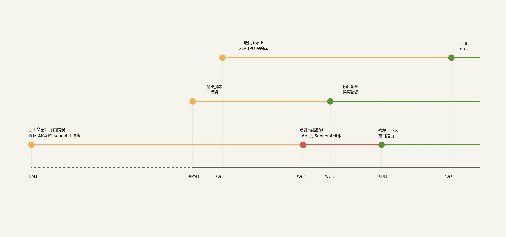
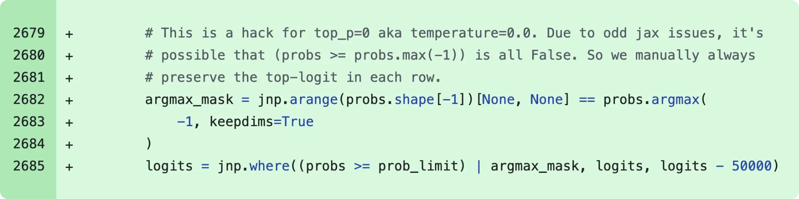
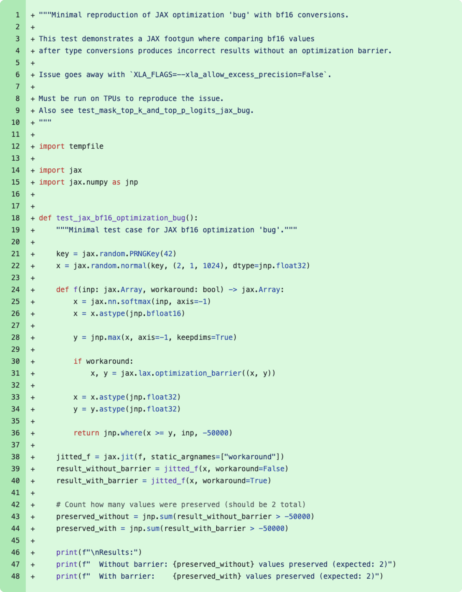
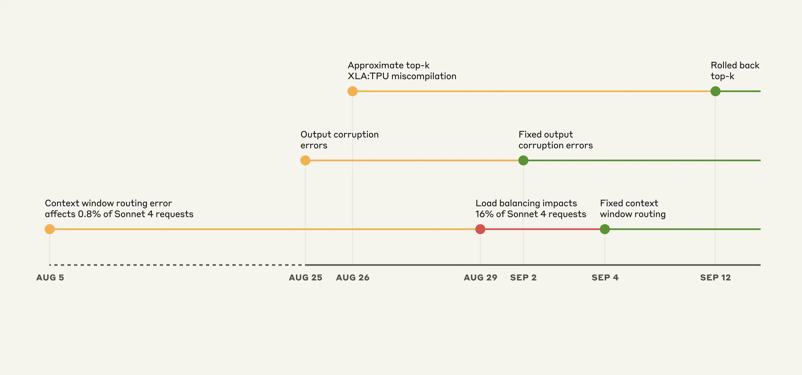
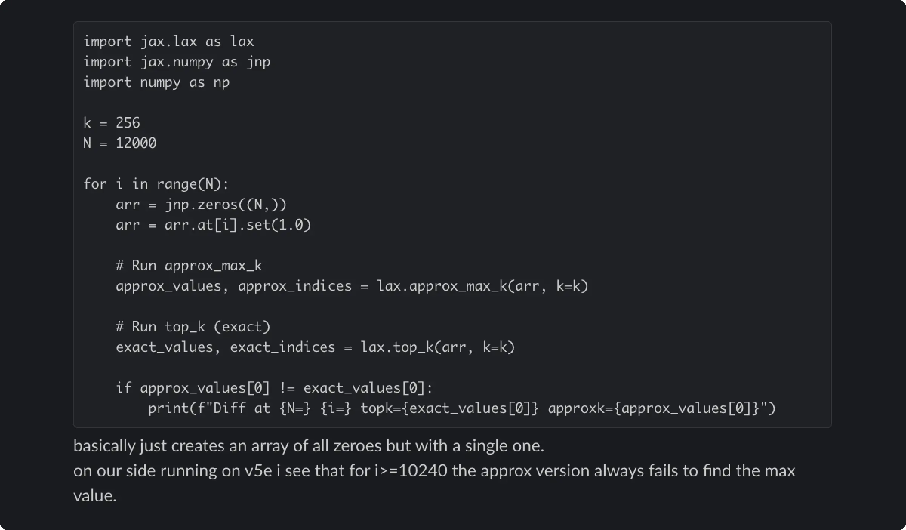

三起近期问题的复盘
📖 中文摘要
专业术语注解
复盘（postmortem）：事故后系统梳理时间线、根因与改进措施的报告上下文窗口路由：按请求上下文长度把流量分配到对应服务器池的机制粘性路由：同一会话的后续请求被固定送往同一台服务器top-p采样：只从累积概率达到阈值的候选词中抽样的解码方法近似top-k：用近似算法快速挑出概率最高的k个候选，更快但可能返回错误结果📄 中文全文
- 类别： 工程（Engineering）
- 来源： https://www.anthropic.com/research/a-postmortem-of-three-recent-issues
工程（Engineering） 2025 年 9 月 17 日

已发布 2025 年 9 月 17 日 团队 工程 主题相关文章 * 公告 2026 年 9 月 28 日 推出 Claude Sonnet 5.5
阅读更多 8 月到 9 月初之间，三个基础设施 bug 间歇性地降低了 Claude 的回复质量。我们现已解决这些问题，想说明一下发生了什么。 8 月初，陆续有用户报告 Claude 的回复变差。这些最初的报告很难与用户反馈中的正常波动区分开来。到 8 月下旬，报告的频率和持续性都在上升，促使我们启动调查，最终查出三个彼此独立的基础设施 bug。 把话说清楚：我们绝不会因为需求、时段或服务器负载而降低模型质量。用户报告的那些问题，完全由基础设施 bug 造成。 我们知道用户期待 Claude 的质量始终一致，也为「基础设施改动不影响模型输出」设了极高的标准。在最近这几起事件中，我们没达到这个标准。下面的复盘会说明哪里出了错、为什么发现和修复花的时间比我们希望的更长，以及我们正在做哪些改变来防止今后再发生类似事件。 我们通常不会公开基础设施到这种技术细节程度，但这几起问题的波及范围和复杂度，值得做一次更完整的说明。
我们如何大规模提供 Claude 服务
我们通过第一方 API、Amazon Bedrock 和 Google Cloud 的 Vertex AI，向数百万用户提供 Claude。我们把 Claude 部署在多种硬件平台上，即 AWS Trainium、NVIDIA GPU 和 Google TPU。这一做法提供了服务全球用户所需的容量和地域分布。 每种硬件平台特性不同，需要专门的优化。尽管有这些差异，我们对模型实现有严格的等价标准，目标是无论请求由哪个平台处理，用户都应得到相同质量的回复。这种复杂性意味着任何基础设施改动都必须在所有平台和配置上仔细验证。
事件时间线

Claude API 上的事件示意时间线。黄色：发现问题，红色：降级加剧，绿色：修复上线。 这些 bug 相互重叠，使诊断格外困难。第一个 bug 于 8 月 5 日引入，影响约 0.8% 发往 Sonnet 4 的请求。另外两个 bug 则源自 8 月 25 日和 26 日的部署。 虽然最初影响有限，但 8 月 29 日的一次负载均衡改动开始放大受影响的流量。这让更多用户遇到问题，而另一些用户仍看到正常表现，于是出现了令人困惑、彼此矛盾的报告。三个相互重叠的问题
下面描述造成降级的三个 bug、发生时间，以及我们如何解决：
1. 上下文窗口路由错误
8 月 5 日，部分 Sonnet 4 请求被错误路由到为即将推出的 1M token 上下文窗口 而配置的服务器上。这个 bug 最初影响 0.8% 的请求。8 月 29 日，一次例行负载均衡改动意外增加了被路由到 1M 上下文服务器的短上下文请求数量。在 8 月 31 日受影响最严重的那个小时里，16% 的 Sonnet 4 请求受到影响。 在此期间发起请求的 Claude Code 用户中，约 30% 至少有一条消息被路由到错误的服务器类型，导致回复质量下降。在 Amazon Bedrock 上，自 8 月 12 日起，被错误路由的流量峰值达到所有 Sonnet 4 请求的 0.18%。8 月 27 日至 9 月 16 日期间，Google Cloud 的 Vertex AI 上受错误路由影响的请求不到 0.0004%。 不过，有些用户受影响更严重，因为我们的路由是「粘性」的。这意味着一旦某个请求由错误的服务器处理，后续的追问很可能也由同一台错误服务器处理。 解决方案： 我们修复了路由逻辑，确保短上下文和长上下文请求被导向正确的服务器池。修复于 9 月 4 日部署；到 9 月 16 日已完成在第一方平台与 Google Cloud 的 Vertex AI 上的全量上线，到 9 月 18 日完成在 AWS Bedrock 上的上线。
2. 输出损坏
8 月 25 日，我们向 Claude API 的 TPU 服务器部署了一项错误配置，导致 token 生成过程中出错。一项由运行时性能优化引发的问题，偶尔会给「在该上下文下本应极少出现」的 token 赋予高概率，例如在英文提示下产出泰文或中文字符，或在代码中产出明显的语法错误。举例来说，一小部分用英文提问的用户，可能在回复中间看到「สวัสดี」。 这种损坏影响了 8 月 25 日至 28 日发往 Opus 4.1 和 Opus 4 的请求，以及 8 月 25 日至 9 月 2 日发往 Sonnet 4 的请求。第三方平台未受此问题影响。 解决方案： 我们定位了问题，并于 9 月 2 日回滚了该改动。我们在部署流程中加入了针对异常字符输出的检测测试。
3. 近似 top-k XLA:TPU 误编译
8 月 25 日，我们部署了代码，以改进 Claude 在文本生成时选择 token 的方式。这项改动无意中触发了 XLA:TPU1 编译器里一个潜伏的 bug，已确认它影响到发往 Claude Haiku 3.5 的请求。 我们也认为它可能影响了 Claude API 上一部分 Sonnet 4 和 Opus 3 的请求。第三方平台未受此问题影响。 解决方案： 我们先是发现该 bug 影响 Haiku 3.5，于 9 月 4 日回滚。后来注意到用户报告的 Opus 3 问题与该 bug 相符，于 9 月 12 日回滚。经过大量排查，我们未能在 Sonnet 4 上复现这个 bug，但出于格外谨慎，也决定一并回滚。 与此同时，我们（a）一直与 XLA:TPU 团队合作修复这个编译器 bug，（b）上线了改用更高精度精确 top-k 的修复。详情见下文的深入剖析。
深入看看 XLA 编译器 bug
为了说明这些问题的复杂性，下面讲讲 XLA 编译器 bug 是如何显现的，以及它为什么格外难诊断。 Claude 生成文本时，会为每个可能的下一个词计算概率，再从这个概率分布中随机抽样。我们用「top-p 采样」来避免荒谬的输出——只考虑累积概率达到某个阈值（通常是 0.99 或 0.999）的词。在 TPU 上，我们的模型跨多块芯片运行，概率计算发生在不同位置。要排序这些概率，就需要在芯片之间协调数据，这很复杂。2 2024 年 12 月，我们发现当 温度（temperature） 为零时，我们的 TPU 实现偶尔会丢掉概率最高的 token。我们部署了一个变通方案来修复这一情况。

2024 年 12 月补丁的代码片段，用于绕开 temperature = 0 时意外丢弃最高概率 token 的 bug。 根因涉及混合精度运算。我们的模型用 bf16（16 位浮点）计算下一个 token 的概率。然而向量处理器是 fp32 原生的，因此 TPU 编译器（XLA）可以通过把某些运算转成 fp32（32 位）来优化运行时。这一优化过程由xla_allow_excess_precision 标志控制，其默认值为 true。
这造成了一处不一致：本应对「哪个 token 概率最高」达成一致的运算，却运行在不同的精度级别上。精度不一致意味着它们对最高概率 token 的判断不吻合，结果有时会让这个 token 从候选中彻底消失。
8 月 26 日，我们部署了重写后的采样代码，以修复精度问题，并改进对「刚好触及 top-p 阈值的边界概率」的处理。但在修复这些问题的过程中，我们暴露出一个更棘手的问题。

代码片段：作为 8 月 11 日改动的一部分合并的最小复现程序，它找到了 2024 年 12 月所绕开的「bug」的根因。实际上，那是xla_allow_excess_precision 标志的预期行为。
我们的修复移除了 12 月的变通方案，因为我们以为已经解决了根因。这引出了 近似 top-k 运算里一个更深层的 bug——近似 top-k 是一种快速找出最高概率 token 的性能优化。3 这种近似有时会返回完全错误的结果，但只在特定批量大小和模型配置下才会。12 月的变通方案此前无意中掩盖了这个问题。
 与开发该算法的 XLA:TPU 工程师分享的底层近似 top-k bug 复现程序。这段代码在 CPU 上运行时返回正确结果。
这个 bug 的行为令人沮丧地不稳定。它会随一些看似无关的因素而变化，比如它前后运行了哪些运算、是否启用了调试工具。同一条提示词，可能在一次请求里完全正常，在下一次却失败。
调查过程中，我们还发现精确 top-k 运算已不再有过去那种令人却步的性能代价。我们从近似 top-k 切换到精确 top-k，并把一些额外运算统一到 fp32 精度。4 模型质量没有商量余地，所以我们接受了这点效率损失。
与开发该算法的 XLA:TPU 工程师分享的底层近似 top-k bug 复现程序。这段代码在 CPU 上运行时返回正确结果。
这个 bug 的行为令人沮丧地不稳定。它会随一些看似无关的因素而变化，比如它前后运行了哪些运算、是否启用了调试工具。同一条提示词，可能在一次请求里完全正常，在下一次却失败。
调查过程中，我们还发现精确 top-k 运算已不再有过去那种令人却步的性能代价。我们从近似 top-k 切换到精确 top-k，并把一些额外运算统一到 fp32 精度。4 模型质量没有商量余地，所以我们接受了这点效率损失。
为什么发现得这么难
我们的验证流程通常依赖基准测试，辅以安全评估和性能指标。工程团队会做抽查，并先向小规模的「金丝雀」分组部署。 这些问题暴露出我们本该更早发现的关键缺口。我们跑的评估根本没捕捉到用户报告的降级，部分原因是 Claude 往往能从孤立的错误中很好地恢复。我们自身的隐私实践也给调查带来困难：内部的隐私与安全管控限制了工程师何时、以何种方式访问用户与 Claude 的交互，尤其是那些没有作为反馈上报给我们的交互。这保护了用户隐私，却也让工程师无法查看识别或复现 bug 所需的问题交互。 每个 bug 在不同平台上、以不同比例呈现出不同症状。这造成了一堆令人困惑、指向不了任何单一原因的报告，看上去像是随机、时好时坏的降级。 更根本的是，我们过于依赖噪声很大的评估。虽然我们注意到网上报告在增多，却缺少清晰的办法把这些报告与近期的各项改动对应起来。8 月 29 日负面报告激增时，我们没有立刻把它与一次本属常规的负载均衡改动联系起来。
我们正在做的改变
在继续改进基础设施的同时，我们也在改进评估和防范上文这类 bug 的方式，覆盖所有提供 Claude 服务的平台。以下是我们正在做的改变： * 更灵敏的评估： 为帮助找到任一问题的根因，我们开发了能更可靠地区分「正常实现」与「损坏实现」的评估。我们会持续改进这些评估，更紧密地盯住模型质量。 * 在更多环节做质量评估： 虽然我们已在系统上定期跑评估，但今后会在真实生产系统上持续运行，以便捕捉到上下文窗口负载均衡错误这类问题。 * 更快的调试工具： 我们会开发基础设施和工具，在不牺牲用户隐私的前提下更好地排查来自社区的反馈。此外，这里开发的一些定制工具也将用于缩短未来类似事件（如果发生）的修复时间。
评估和监控很重要。但这几起事件表明，当 Claude 的回复达不到一贯水准时，我们同样需要来自用户的持续信号。用户报告观察到的具体变化、遇到的异常行为实例，以及跨不同使用场景呈现出的规律，都帮助我们定位了问题。
用户继续直接把反馈发给我们，仍然格外有帮助。你可以在 Claude Code 里用 /bug 命令，或在 Claude 应用里点「踩」按钮来提交。开发者和研究人员常会创造出新颖有趣的模型质量评估方法，作为我们内部测试的补充。如果你愿意分享自己的方法，可以联系 feedback@anthropic.com。
我们始终感谢社区做出的这些贡献。
作者与致谢
致谢
作者：Sam McAllister。感谢 Stuart Ritchie、Jonathan Gray、Kashyap Murali、Brennan Saeta、Oliver Rausch、Alex Palcuie 以及许多其他同事。 [1] XLA:TPU 是把 XLA 高级优化语言（通常用 JAX 编写）翻译成 TPU 机器指令的优化编译器。 [2] 我们的模型太大，单块芯片装不下，被切分到数十块甚至更多芯片上，因此排序运算是一次分布式排序。TPU（和 GPU、Trainium 一样）与 CPU 的性能特性也不同，需要用向量化运算而非串行算法的不同实现技术。 [3] 我们此前一直使用这个近似运算，因为它带来可观的性能提升。其原理是容忍概率最低的那些 token 上可能出现的误差，这本不该影响质量——除非 bug 让它转而丢掉了概率最高的 token。 [4] 请注意，如今已修正的 top-k 实现可能让「刚好靠近 top-p 阈值的 token 是否被纳入」出现细微差异；在少数情况下，用户重新调一调 top-p 的取值会有好处。
▸ 英文原文（点击展开）
A postmortem of three recent issues
- Date: 2025-09-17
- Source: https://www.anthropic.com/research/a-postmortem-of-three-recent-issues
A postmortem of three recent issues
Published Sep 17, 2025 Team Engineering Topics
Related articles * Announcements Sep 28, 2026 Introducing Claude Sonnet 5.5
View more Between August and early September, three infrastructure bugs intermittently degraded Claude's response quality. We've now resolved these issues and want to explain what happened. In early August, a number of users began reporting degraded responses from Claude. These initial reports were difficult to distinguish from normal variation in user feedback. By late August, the increasing frequency and persistence of these reports prompted us to open an investigation that led us to uncover three separate infrastructure bugs. To state it plainly: We never reduce model quality due to demand, time of day, or server load. The problems our users reported were due to infrastructure bugs alone. We recognize users expect consistent quality from Claude, and we maintain an extremely high bar for ensuring infrastructure changes don't affect model outputs. In these recent incidents, we didn't meet that bar. The following postmortem explains what went wrong, why detection and resolution took longer than we would have wanted, and what we're changing to prevent similar future incidents. We don't typically share this level of technical detail about our infrastructure, but the scope and complexity of these issues justified a more comprehensive explanation.
How we serve Claude at scale
We serve Claude to millions of users via our first-party API, Amazon Bedrock, and Google Cloud's Vertex AI. We deploy Claude across multiple hardware platforms, namely AWS Trainium, NVIDIA GPUs, and Google TPUs. This approach provides the capacity and geographic distribution necessary to serve users worldwide. Each hardware platform has different characteristics and requires specific optimizations. Despite these variations, we have strict equivalence standards for model implementations. Our aim is that users should get the same quality responses regardless of which platform serves their request. This complexity means that any infrastructure change requires careful validation across all platforms and configurations.
Timeline of events

Illustrative timeline of events on the Claude API. Yellow: issue detected, Red: degradation worsened, Green: fix deployed. The overlapping nature of these bugs made diagnosis particularly challenging. The first bug was introduced on August 5, affecting approximately 0.8% of requests made to Sonnet 4. Two more bugs arose from deployments on August 25 and 26. Although initial impacts were limited, a load balancing change on August 29 started to increase affected traffic. This caused many more users to experience issues while others continued to see normal performance, creating confusing and contradictory reports.Three overlapping issues
Below we describe the three bugs that caused the degradation, when they occurred, and how we resolved them:
1. Context window routing error
On August 5, some Sonnet 4 requests were misrouted to servers configured for the upcoming 1M token context window. This bug initially affected 0.8% of requests. On August 29, a routine load balancing change unintentionally increased the number of short-context requests routed to the 1M context servers. At the worst impacted hour on August 31, 16% of Sonnet 4 requests were affected. Approximately 30% of Claude Code users who made requests during this period had at least one message routed to the wrong server type, resulting in degraded responses. On Amazon Bedrock, misrouted traffic peaked at 0.18% of all Sonnet 4 requests from August 12. Incorrect routing affected less than 0.0004% of requests on Google Cloud's Vertex AI between August 27 and September 16. However, some users were affected more severely, as our routing is "sticky". This meant that once a request was served by the incorrect server, subsequent follow-ups were likely to be served by the same incorrect server. Resolution: We fixed the routing logic to ensure short- and long-context requests were directed to the correct server pools. We deployed the fix on September 4. Rollout to our first-party platform and Google Cloud's Vertex AI was completed by September 16, and to AWS Bedrock by September 18.
2. Output corruption
On August 25, we deployed a misconfiguration to the Claude API TPU servers that caused an error during token generation. An issue caused by a runtime performance optimization occasionally assigned a high probability to tokens that should rarely be produced given the context, for example producing Thai or Chinese characters in response to English prompts, or producing obvious syntax errors in code. A small subset of users that asked a question in English might have seen "สวัสดี" in the middle of the response, for example. This corruption affected requests made to Opus 4.1 and Opus 4 on August 25-28, and requests to Sonnet 4 August 25–September 2. Third-party platforms were not affected by this issue. Resolution: We identified the issue and rolled back the change on September 2. We've added detection tests for unexpected character outputs to our deployment process.
3. Approximate top-k XLA:TPU miscompilation
On August 25, we deployed code to improve how Claude selects tokens during text generation. This change inadvertently triggered a latent bug in the XLA:TPU1 compiler, which has been confirmed to affect requests to Claude Haiku 3.5. We also believe this could have impacted a subset of Sonnet 4 and Opus 3 on the Claude API. Third-party platforms were not affected by this issue. Resolution: We first observed the bug affecting Haiku 3.5 and rolled it back on September 4. We later noticed user reports of problems with Opus 3 that were compatible with this bug, and rolled it back on September 12. After extensive investigation we were unable to reproduce this bug on Sonnet 4 but decided to also roll it back out of an abundance of caution. Simultaneously, we have (a) been working with the XLA:TPU team on a fix for the compiler bug and (b) rolled out a fix to use exact top-k with enhanced precision. For details, see the deep dive below.
A closer look at the XLA compiler bug
To illustrate the complexity of these issues, here's how the XLA compiler bug manifested and why it proved particularly challenging to diagnose.
When Claude generates text, it calculates probabilities for each possible next word, then randomly chooses a sample from this probability distribution. We use "top-p sampling" to avoid nonsensical outputs—only considering words whose cumulative probability reaches a threshold (typically 0.99 or 0.999). On TPUs, our models run across multiple chips, with probability calculations happening in different locations. To sort these probabilities, we need to coordinate data between chips, which is complex.2
In December 2024, we discovered our TPU implementation would occasionally drop the most probable token when temperature was zero. We deployed a workaround to fix this case.
Code snippet of a December 2024 patch to work around the unexpected dropped token bug when temperature = 0.
The root cause involved mixed precision arithmetic. Our models compute next-token probabilities in bf16 (16-bit floating point). However, the vector processor is fp32-native, so the TPU compiler (XLA) can optimize runtime by converting some operations to fp32 (32-bit). This optimization pass is guarded by the xla_allow_excess_precision flag which defaults to true.
This caused a mismatch: operations that should have agreed on the highest probability token were running at different precision levels. The precision mismatch meant they didn't agree on which token had the highest probability. This caused the highest probability token to sometimes disappear from consideration entirely.
On August 26, we deployed a rewrite of our sampling code to fix the precision issues and improve how we handled probabilities at the limit that reach the top-p threshold. But in fixing these problems, we exposed a trickier one.
Code snippet showing a minimized reproducer merged as part of the August 11 change that root-caused the "bug" being worked around in December 2024. In reality, it’s expected behavior of the xla_allow_excess_precision flag.
Our fix removed the December workaround because we believed we'd solved the root cause. This led to a deeper bug in the approximate top-k operation—a performance optimization that quickly finds the highest probability tokens.3 This approximation sometimes returned completely wrong results, but only for certain batch sizes and model configurations. The December workaround had been inadvertently masking this problem.

Reproducer of the underlying approximate top-k bug shared with the XLA:TPU engineers who developed the algorithm. The code returns correct results when run on CPUs. The bug's behavior was frustratingly inconsistent. It changed depending on unrelated factors such as what operations ran before or after it, and whether debugging tools were enabled. The same prompt might work perfectly on one request and fail on the next. While investigating, we also discovered that the exact top-k operation no longer had the prohibitive performance penalty it once did. We switched from approximate to exact top-k and standardized some additional operations on fp32 precision.4 Model quality is non-negotiable, so we accepted the minor efficiency impact.Why detection was difficult
Our validation process ordinarily relies on benchmarks alongside safety evaluations and performance metrics. Engineering teams perform spot checks and deploy to small "canary" groups first. These issues exposed critical gaps that we should have identified earlier. The evaluations we ran simply didn't capture the degradation users were reporting, in part because Claude often recovers well from isolated mistakes. Our own privacy practices also created challenges in investigating reports. Our internal privacy and security controls limit how and when engineers can access user interactions with Claude, in particular when those interactions are not reported to us as feedback. This protects user privacy but prevents engineers from examining the problematic interactions needed to identify or reproduce bugs. Each bug produced different symptoms on different platforms at different rates. This created a confusing mix of reports that didn't point to any single cause. It looked like random, inconsistent degradation. More fundamentally, we relied too heavily on noisy evaluations. Although we were aware of an increase in reports online, we lacked a clear way to connect these to each of our recent changes. When negative reports spiked on August 29, we didn't immediately make the connection to an otherwise standard load balancing change.
What we're changing
As we continue to improve our infrastructure, we're also improving the way we evaluate and prevent bugs like those discussed above across all platforms where we serve Claude. Here's what we're changing: * More sensitive evaluations: To help discover the root cause of any given issue, we’ve developed evaluations that can more reliably differentiate between working and broken implementations. We’ll keep improving these evaluations to keep a closer eye on model quality. * Quality evaluations in more places: Although we run regular evaluations on our systems, we will run them continuously on true production systems to catch issues such as the context window load balancing error. * Faster debugging tooling: We'll develop infrastructure and tooling to better debug community-sourced feedback without sacrificing user privacy. Additionally, some bespoke tools developed here will be used to reduce the remediation time in future similar incidents, if those should occur.
Evals and monitoring are important. But these incidents have shown that we also need continuous signal from users when responses from Claude aren't up to the usual standard. Reports of specific changes observed, examples of unexpected behavior encountered, and patterns across different use cases all helped us isolate the issues.
It remains particularly helpful for users to continue to send us their feedback directly. You can use the /bug command in Claude Code or you can use the "thumbs down" button in the Claude apps to do so. Developers and researchers often create new and interesting ways to evaluate model quality that complement our internal testing. If you'd like to share yours, reach out to feedback@anthropic.com.
We remain grateful to our community for these contributions.
Authors & acknowledgements
Acknowledgements
Written by Sam McAllister, with thanks to Stuart Ritchie, Jonathan Gray, Kashyap Murali, Brennan Saeta, Oliver Rausch, Alex Palcuie, and many others. [1] XLA:TPU is the optimizing compiler that translates XLA High Level Optimizing language—often written using JAX—to TPU machine instructions. [2] Our models are too large for single chips and are partitioned across tens of chips or more, making our sorting operation a distributed sort. TPUs (just like GPUs and Trainium) also have different performance characteristics than CPUs, requiring different implementation techniques using vectorized operations instead of serial algorithms. [3] We had been using this approximate operation because it yielded substantial performance improvements. The approximation works by accepting potential inaccuracies in the lowest probability tokens, which shouldn't affect quality—except when the bug caused it to drop the highest probability token instead. [4] Note that the now-correct top-k implementation may result in slight differences in the inclusion of tokens near the top-p threshold, and in rare cases users may benefit from re-tuning their choice of top-p.